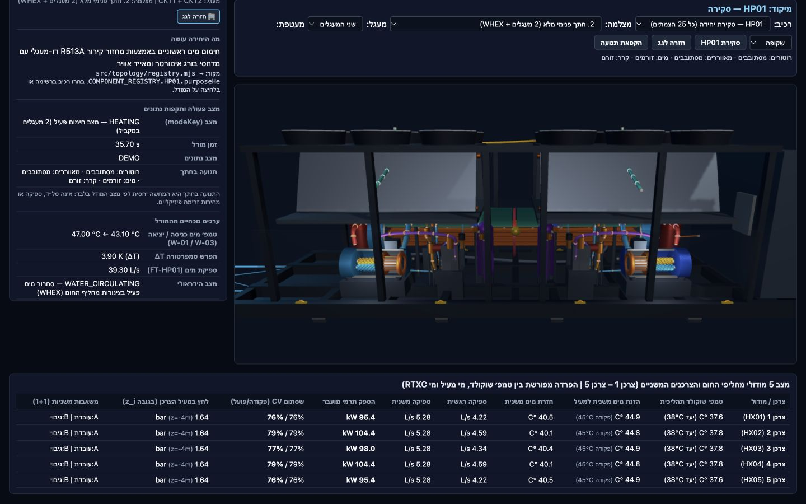

Make work easier.
Business tools & automation
Internal dashboards, structured information and practical workflows that help people see what needs attention.
✳ INDEPENDENT THINKING. AI-ASSISTED MAKING.
Get to know how I think and work. Then explore the projects that make that approach visible.
A personal portfolio. A working lab. A place to start a conversation.

YOUR PORTRAIT HEREA real photograph, when you’re ready.
01 / A PERSONAL INTRODUCTION
I’m building a practice around curiosity, practical problems and the possibilities of AI.
I define what needs to work, bring the pieces together and use separate review steps to question the result. The projects here make that process visible.
This space is reserved for your background, your current work, the experience you want to share and the direction you want to take next.
Draft placeholders. Personal details and social profiles are not published or inferred.
02 / HOW I APPROACH THE WORK
Tools change. Being clear about the problem, checking the outcome and explaining the limitations remain part of the work.
Who will use it? What needs to change? What would a useful first result look like?
Make the idea tangible early. Review the actual interface and behavior, not only a description.
Separate building from review. Keep a clear distinction between a demonstration and a finished system.
03 / THE PORTFOLIO
A growing collection of systems, interfaces and experiments. Each project tells you what it is — and what it isn’t.
Explore the other projects in the collection.
04 / WAYS TO WORK TOGETHER
Start with the problem you want to solve. We can define a focused first version and decide what should come next.
Business tools & automation
Internal dashboards, structured information and practical workflows that help people see what needs attention.
Simulations, 3D & learning
Interactive system explanations, technical demonstrations and learning experiences people can explore.
Websites, apps & prototypes
A professional web presence, an interactive product concept or a small application built around a real task.
Beyond the first version. Maintenance, further development and a longer collaboration can be discussed as part of the scope.
PROJECTS. PARTNERSHIPS. THE NEXT CHAPTER.
Have a project, a collaboration or a role in mind? There’s more than one way we could work together.
An explicit “open to work” notice can be enabled later, at your choice.
05 / LET’S START SOMEWHERE
A practical problem. An ambitious idea. A possible next step.